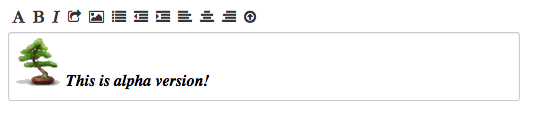

Welcome!
Free WYSIWYG text editor jQuery Plugin. This plugin implements a free HTML / text editor.
To use:
% cd WEB_ROOT/vendors
% git clone git://github.com/joaoneto/FwText.git
% cd FwText
% git checkout 0.1
% git submodule init
% git submodule update
Here a screenshot:
